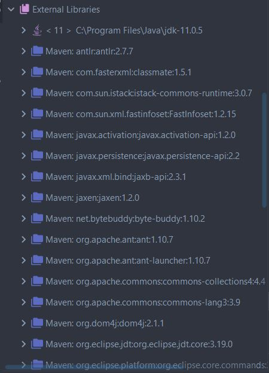

ΔΩΡΕΑΝ ΜΑΘΗΜΑΤΑ APACHE MAVEN
Στην σημερινή ενότητα θα συνεχίσουμε την αναφορά μας στο Dependency Management του Apache Maven.
Πριν όμως μπούμε σε περισσότερες λεπτομέρειες του Dependency Management ας δούμε
λίγο πόσο σημαντικός είναι ο αριθμός αλλά και το όνομα που έχουμε δηλώσει στο του project μας.
Σε ένα περιβάλλον Maven, είναι πολύ σημαντικό να κατανοήσουμε την χρήση των version αριθμών. Αν έχουμε
μια μελετημένη στρατηγική από την αρχή του Project τότε θα μειώσουμε σε μεγάλο βαθμό το φόρτο
εργασίας για το Dependency Management. Μια βασική γνώση σε έννοιες σχετικά με τον τρόπο που
λειτουργούν οι version αριθμοί είναι απαραίτητη στην προγραμματιστική σας καριέρα.
Γενικότερα το Maven ακολουθεί τον εξής τρόπο για να διαχειριστεί τις εκδόσεις των project μας:
- MajorVersion
- MinorVersion
- IncrementalVersion
- BuildNumber
- Qualifier
Για παράδειγμα:
3.2.1-987-beta
- MajorVersion: 3
- MinorVersion: 2
- IncrementalVersion: 1
- BuildNumber: 987
- Qualifier: beta
Συνήθως οι εταιρείες δεν έχουν τόσο μεγάλους και αναλυτικούς αριθμούς στα project τους.
Η πιο συνηθισμένη προσέγγιση είναι να έχουν μόνο το Major και Minor
αριθμό ή κάποιες επιλέγουν να προσθέσουν και τον Incremental αριθμό.
Αυτό όμως που έχει μεγάλη σημασία, είναι η λέξη SNAPSHOT που έχουμε προσθέσει στο
δικό μας project. Για να το καταλάβετε καλύτερα, ας περιγράψουμε ένα παράδειγμα.
Σκεφτείτε λοιπόν ότι το δικό μας project (ας το ονομάσουμε project A) το έχουμε
ανεβάσει σε ένα repository και στο version number έχουμε αφήσει την λέξη SNAPSHOT
γιατί ακόμα δεν έχουμε ολοκληρώσει όλο τον κώδικα. Κάποιο άλλο project (project B)
χρειάζεται να κατεβάσει και να χρησιμοποιήσει σαν βιβλιοθήκη το project A έτσι ώστε
να μην αναγκαστεί να ξαναγράψει τον ίδιο κώδικα. Προσθέτουμε λοιπόν το project A στο
POM του καινούργιου project B σαν dependency όπως ακριβώς κάναμε και στο προηγούμενο
παράδειγμα μας. Αν προσπαθήσουμε τώρα να κάνουμε mvn clean install στο project B,
το Maven θα αντιληφθεί ότι κάποιο dependency δεν είναι στην τελική του μορφή (αυτό
του Project A) και αν και εφόσον κατεβάσει την πιο τελευταία έκδοση θα συνεχίσει
να ελέγχει το remote repository για καινούργιες εκδόσεις μια φορά την μέρα. Αυτή
η διαδικασία θα σταματήσει όταν διαγράψουμε την λέξη SNAPSHOT από το version του
project A γιατί τότε θα το χαρακτηρίσει σαν stable version οπότε το Maven δεν
θα ελέγξει ξανά για καινούργιες εκδόσεις του συγκεκριμένου dependency.
Ας δούμε μερικά ακόμα χαρακτηριστικά του dependency management προσθέτοντας ένα ακόμα dependency.
Όπως ήδη έχετε μαντέψει, και αυτό το dependency θα προστεθεί μέσα στην κατηγορία dependencies
όπου ανήκει ήδη το commons-lang. Για αυτό το παράδειγμα, θα προσθέσουμε την βιβλιοθήκη του
hibernate η οποία μας δίνει έναν πολύ εύκολο τρόπο να μπορούμε να γράψουμε και να διαβάσουμε
δεδομένα από μια βάση. Δεν θα γράψουμε κάποιο java κώδικα αλλά μόνο θα συγκεντρωθούμε
στο πως δουλεύει το Maven. Προσθέτουμε λοιπόν το παρακάτω dependency όπως το ορίζει το MVNRepository
Για αυτή την συγκεκριμένη βιβλιοθήκη που προσπαθούμε να προσθέσουμε στο project μας,
υπάρχουν μερικά αξιόλογα σημεία στα οποία μπορούμε να αναφερθούμε. Κατά αρχάς,
παρατηρήστε ότι στο version υπάρχει η λέξη Final. Με αυτό τον τρόπο ενημερώνεται
το Maven ότι δεν θα υπάρξουν άλλες αναβαθμίσεις αυτής της βιβλιοθήκης, οπότε από την
στιγμή που την κατεβάσει τοπικά στον υπολογιστή μας (local repository) δεν θα
ελέγξει ξανά για νέες εκδόσεις.
Λίγο πιο κάτω από το πλαίσιο με τον ορισμό του hibernate-tools dependency, θα βρείτε έναν πίνακα
με όλα τα άλλα dependencies στα οποία στηρίζεται η συγκεκριμένη βιβλιοθήκη. Σε αυτό εδώ
ακριβώς το σημείο είναι που νιώθετε τυχεροί που έχετε επιλέξει το Maven σαν το Build tool για το project σας.
Αν κατεβάσετε την βιβλιοθήκη μόνοι σας, θα πρέπει να κατεβάσετε και όλα τα άλλα
jars από τα οποία εξαρτάται η σωστή λειτουργία της βιβλιοθήκης. Αυτή από μόνη
της είναι μια πολύ επίπονη διαδικασία που πολλές φορές δεν είναι και απόλυτα
επιτυχής. Ευτυχώς για εμάς δεν χρειάζεται να ασχοληθούμε με αυτή την διαδικασία,
γιατί το Maven από μόνο του θα κατεβάσει και την επιθυμητή βιβλιοθήκη αλλά και όλες
τις άλλες βιβλιοθήκες από τις οποίες εξαρτάται. Ας προσθέσουμε λοιπόν και αυτό το
dependency στο pom και ας τρέξουμε την εντολή mvn clean install. Λογικό είναι να
παρατηρήσετε ότι αρκετές βιβλιοθήκες κατεβαίνουν από το central repository μέχρι
με επιτυχία να γίνει build το project μας.
pom.xml
<?xml version="1.0" encoding="UTF-8"?>
<project xmlns="http://maven.apache.org/POM/4.0.0"
xmlns:xsi="http://www.w3.org/2001/XMLSchema-instance"
xsi:schemaLocation="http://maven.apache.org/POM/4.0.0 http://maven.apache.org/xsd/maven-4.0.0.xsd">
<modelVersion>4.0.0</modelVersion>
<groupId>com.mycompany</groupId>
<artifactId>HelloMaven</artifactId>
<version>1.0-SNAPSHOT</version>
<properties>
<maven.compiler.target>11</maven.compiler.target>
<maven.compiler.source>11</maven.compiler.source>
</properties>
<packaging>jar</packaging>
<dependencies>
<dependency>
<groupId>org.apache.commons</groupId>
<artifactId>commons-lang3</artifactId>
<version>3.9</version>
</dependency>
<dependency>
<groupId>org.hibernate</groupId>
<artifactId>hibernate-tools</artifactId>
<version>5.4.10.Final</version>
</dependency>
</dependencies>
</project>
Αν κοιτάξετε και το φάκελο external libraries θα δείτε περισσότερα αρχεία από ότι περιμένατε.
Σε όλα αυτά στηρίζεται το hibernate-tools για να λειτουργήσει. Μπορείτε να
φανταστείτε να βρείτε, να κατεβάσετε και να προσθέσετε μόνοι σας όλα αυτά
τα jars στο project?

Αν τώρα σβήσετε το version αριθμό από ένα dependency και πατήσετεCtrl + Space Bar
θα εμφανιστεί η λίστα με όλες τις διαθέσιμες εκδόσεις του συγκεκριμένου dependency.
Πριν κλείσουμε αυτή την ενότητα, ας δούμε μερικές χρήσιμες Apache Maven εντολές που μπορούμε να
εκτελέσουμε και να πάρουμε πληροφορίες για τα dependencies που έχουμε δηλώσει στο pom.
Η πρώτη εντολή είναι η mvn versions:display-dependency-updates
η οποία ελέγχει αν υπάρχουν νεότερες εκδόσεις των dependencies που πρέπει να κατεβάσουμε.
Η δεύτερη εντολή μας δείχνει την εξάρτηση που έχουν τα dependencies που έχουν
δηλώσει από άλλες βιβλιοθήκες. Η εντολή είναι mvn dependency:tree
και μας δείχνει με την μορφή δέντρου όλες τις σχέσεις μεταξύ των jars.

Michail Kassapoglou Admin
Γεια σας, είμαι ο Μιχάλης Κασάπογλου και θα σας διδάξω με τον ποιο απλό
τρόπο να χρησιμοποιείτε το Apache Maven για την δημιουργία όλων των Java και Java EE project σας. Ασχολούμαι με την τεχνική εκπαίδευση
σε διάφορες πλατφόρμες, λειτουργικά συστήματα και γλώσσες προγραμματισμού
πάνω από 20 έτη. Κατέχω έναν αρκετά μεγάλο αριθμό πιστοποιήσεων Microsoft και Oracle
και σαν Τraining Lead στην Intrasoft έχω την δυνατότητα να αναβαθμίζω συνεχώς
τις γνώσεις μου και να έχω άμεση επαφή με αληθινά projects και εξειδικευμένες μεθόδους
ανάπτυξης εφαρμογών που έχουν υψηλές απαιτήσεις.
Για τυχόν ερωτήσεις σας μπορείτε να επικοινωνήσετε μαζί μου
στο Michail.Kassapoglou@gmail.com
Σας ευχαριστώ που επισκεφτήκατε την ιστοσελίδα μου.